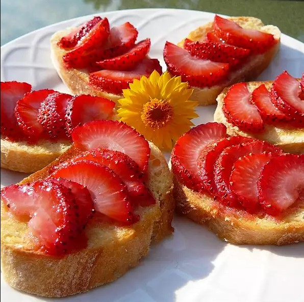

Strawberry Bruschetta
Angelo Maliksi Mendenilla

Description
A delicious variation of the popular tomato based appetizer. The
strawberries are warm and sweet and the sugar is caramelized
and crunchy! You will love it!
Ingredients
- 24 slices french baguette
- 1 tablespoon butter, softened
- 2 cups fresh strawberries, chopped
- ¼ cup white sugar, or as needed
Directions
Step 1
-
Preheat your oven's boiler. Spread a
thin layer of butter on each slice of bread. Arrange
bread slices in a single layer on a large baking sheet.
Step 2
-
Place bread under the boiler for 1 to 2 minutes,
just until lightly toasted. Spoon some chopped strawberries
onto each piece of toast, then sprinkle sugar over the straberries.
Step 3
-
Place under the boiler again until sugar is caramelized
, 3 to 5 minutes. Serve immediately.
Return to mainpage?